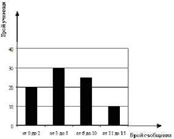
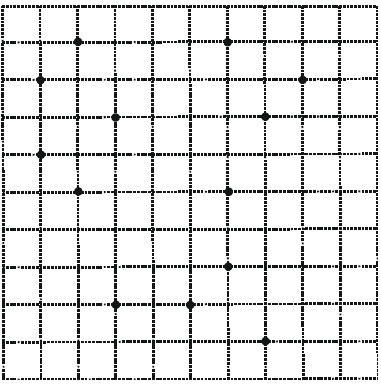
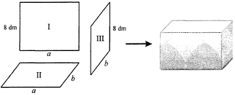

ПЪРВИ МОДУЛ
ЗАДАЧИ С ИЗБИРАЕМ ОТГОВОР
Отговорите на задачи от 1. до 16. включително отбележете в листа с отговори!
Критерии за оценяване
Верният отговор на всяка задача от 1 до 10 включително се оценява с по 2 точки.
- Стойността на израза 152 – 52 е равна на:
Проверете отговор
Моля, изберете отговор.
Отговорът е верен.
Вижте решение
Решение:
- От Формула (5) получаваме:
152 – 52 = (15 – 5)(15 + 5) = 10.20 = 200.
- Верен отговор Г).
- Стойността на израза 12 – (2,5 – b) при b = – 2,5 е:
Проверете отговор
Моля, изберете отговор.
Отговорът е грешен.
Упътване: Приведете даденият израз в нормален вид и след това заместете b с неговото равно
Отговорът е верен.
Вижте решение
Решение:
I начин:
- Заместваме b с неговото равно:
12 – [2,5 – (–2,5)] = 12 – 5 = 7.
- Верен отговор A).
II начин:
- Разкриваме скобите и правим приведение:
12 – (2,5 – b) = 12 – 2,5 + b = 9,5 + b.
- Заместваме b с неговото равно:
9,5 + b = 9,5 + (–2,5) = 9,5 – 2,5 = 7.
- Верен отговор A).
- Ако 3 + k = 4, то стойността на k2 + 6k + 9 е:
Проверете отговор
Моля, изберете отговор.
Отговорът е верен.
Вижте решение
Решение:
- От Формула (1) получаваме:
k2 + 6k + 9 = k2 + 2.k.3 + 32 = (k + 3)2.
- Заместваме с даденото 3 + k = 4:
(k + 3)2 = 42 = 16.
- Верен отговор В).
- Коренът на уравнението 5(2 – x) = –4 e:
Проверете отговор
Моля, изберете отговор.
Отговорът е верен.
Вижте решение
- Кое от числата е решение на неравенството 37 + x < 5x – 7?
Проверете отговор
Моля, изберете отговор.
Отговорът е верен.
Вижте решение
Решение:
- Използваме Правилото за решаване на линейни неравенства:
37 + x < 5x – 7 x – 5x < – 7 – 37 – 4x < – 44 | . (– 1) 4x > 44 x > 11, т.е. x (11; + ∞).
- От дадените числа само 11,1 принадлежи на този интервал.
- Верен отговор А).
- В квадратната мрежа е начертана отсечката AB. Коя от посочените точки e връх на правоъгълен равнобедрен триъгълник с катет AB?
Проверете отговор
Моля, изберете отговор.
Отговорът е верен.
Вижте решение
Решение:
- Страната АВ е с дължина 6 квадратчета (ед.отс.).
- Прав ъгъл имаме при т. А и т.В.
- От чертежа определяме AQ = 6 ед. отс., BP = 4 ед. отс., т.е. AQ = AB или ΔBAQ – правоъгълен равнобедрен.
- Верен отговор Г).
- Дължините на страните на триъгълник в сантиметри могат да са:
Проверете отговор
Моля, изберете отговор.
Отговорът е верен.
Вижте решение
- Диаграмата представя резултатите от изследване на броя кратки съобщения (SMS), които седмокласниците от едно училище изпращат ежедневно. Колко е възможният брой ученици, които изпращат повече от 5 съобщения дневно?
Проверете отговор
Моля, изберете отговор.
Отговорът е грешен.
Упътване: От диаграмата определете броя на учениците изпратили от 6 до 10 и от 11 до 15 SMS.
Отговорът е верен.
Вижте решение
Решение:
- От диаграмата определяме, че:
- 25 ученици са изпратили от 6 до 10 SMS.
- 10 ученици са изпратили от 11 до 15 SMS.
- Общият брой е 35.
- Верен отговор В).
- В 50 kg сплав има 40% сребро. Колко килограма е среброто в тази сплав?
Проверете отговор
Моля, изберете отговор.
Отговорът е грешен.
Упътване: Намерете процент от число.
Отговорът е верен.
Вижте решение
Решение:
- Намираме процент от число:
40% от 50 kg = . 50 = 20 kg.
- Верен отговор В).
- Сборът на числата m и 4 намалили 5 пъти. Получили 0,5. Кое е числото m?
Проверете отговор
Моля, изберете отговор.
Отговорът е грешен.
Упътване: От условието съставете уравнение и го
Решете.
Отговорът е верен.
Вижте решение
Решение:
- От условието получаваме:
m + 4 = 2,5 m = – 1,5.
- Верен отговор Б).
Критерии за оценяване
Верният отговор на всяка задача от 11 до 16 включително се оценява с по 3 точки.
- Тони имал х лева. Похарчил от тях и после дал на Иво 2 лв. и 50 ст. Парите, които са му останали, могат да се изразят в левове така:
Проверете отговор
Моля, изберете отговор.
Отговорът е грешен.
Упътване:
- Запишете като израз парите, които Тони е похарчил.
- От началната сума x извадете похарчената сума.
Отговорът е верен.
Вижте решение
Решение:
- От условието намираме похарчената сума:
x + 2,5.
- Щом началната сума е x, то останалата непохарчена сума е:
x – = x – x – 2,5 = x – 2,5.
- Верен отговор А).
- Кой израз е тъждествено равен на многочлена, отговарящ на следното описание:
Към втората степен на едночлена 3n е прибавено произведението на n и 3.
Проверете отговор
Моля, изберете отговор.
Отговорът е грешен.
Упътване: От условието съставете израз и
Разложете на множители, чрез изнасяне на общ множител пред скоба.
Отговорът е верен.
Вижте решение
- Точките В и С лежат на раменете на LAM, като ВСL = МСL. По данните от чертежа намерете мярката на LAM.
Проверете отговор
Моля, изберете отговор.
Отговорът е верен.
Вижте решение
Решение:
- От ABC – външен за ΔBLC следва, че:
BLC + BCL = ABC 17° + BCL = 56° BCL = 39°.
- От LC – ъглополовяща на BCM BCM = 2BCL = 2.39° = 78°.
- От BCM – външен за ΔABC следва, че:
ABC + BAC = BCM BAC + 56° = 78° BAC = 22°.
- Верен отговор В).
- Изразът (a + 1)3 – (a + 1)(a2 – a + 1) е тъждествено равен на:
Проверете отговор
Моля, изберете отговор.
Отговорът е верен.
Вижте решение
Решение:
- Прилагаме Формули (3) и (6) и опростяваме:
(a + 1)3 – (a + 1)(a2 – a + 1) = a3 + 3a2 + 3a + 1 – (a3 + 1) = a3 + 3a2 + 3a + 1 – a3 – 1 = 3a2 + 3a.
- Верен отговор Г).
- На чертежа, CH перпендикулярна на AB и ВН = СН = АС. Мярката на ъгъл АСВ е равна на:
Проверете отговор
Моля, изберете отговор.
Отговорът е грешен.
Упътване:
- Докажете, че ΔBHC е равнобедрен и намерете ъгъл ВСН.
- Докажете, че в ΔAHC ъгъл НАС е равен на 30° и ъгъл АСН е равен на 60°.
- Намерете търсения ъгъл.
Отговорът е верен.
Вижте решение
Решение:
- BH = CH ΔBHC – равнобедрен, но BHC = 90°, тогава от Теорема за сбор от ъгли HBC + HCB = 90° 2HCB = 90° HCB = 45°.
- В ΔAHC имаме: AHC = 90° и CH = AC HAC = 30°, тогава от Теорема за сбор на ъгли ACH + HAC = 90° ACH = 90° – 30° = 60°.
- ACB = ACH + BCH = 60° + 45° = 105°.
- Верен отговор Б).
- На чертежа ABCD е успоредник, DM е ъглополовяща и AD = DM = 4 cm. Ако MB =3cm, то периметърът на MBCD в сантиметри е:
Проверете отговор
Моля, изберете отговор.
Отговорът е грешен.
Упътване:
- Докажете, че ΔAMD е равностранен.
- Намерете ВС и CD.
Отговорът е верен.
Вижте решение
Решение:
- (AB || CD) ∩ DM CDM = AMD (като кръстни ъгли), т.е. ΔAMD – равнобедрен с бедра AM = DM = 4 cm, но по условие DM = AD AM = DM = AD = 4 cm.
- ABCD – успоредник BC = AD = 4 cm, CD = AB = AM + MB = 4 + 3 = 7 cm.
- PMBCD = MB + BC + CD + DM = 3 + 4 + 7 + 4 = 18.
- Верен отговор Б).
ЗАДАЧИ СЪС СВОБОДЕН ОТГОВОР
Отговорите на задачи 17. – 20. запишете на съответните места в листа с отговори.
- Наем за зала се определя по формулата y = 15x + 30, където x е броят на часовете за ползване, а y е цената в левове. За колко чáса най-много можете да наемете тази зала, ако имате 180 лв.?
Вижте упътване
Вижте решение
Критерии за оценяване
3 точки за отговор 10 чáса.
- В първата колона на таблицата последователно са изпълнени указания за привеждане на израза 4 – 4x2 – 2x( x + 2)+ x в нормален вид. Попълнете празната колона, като следвате същите действия за израза
x + (1 + 2x)2 – 3(x – 1).
Указания:
(А) Разкрий скобите.
(Б) Направи приведение.
(В) Подреди едночлените по степените им.
| Приведете в нормален вид многочлена |
| 4 – 4x2 – 2x(x + 2) + x |
x + (1 + 2x)2 – 3(x – 1) |
| 4 – 4x2 – 2x2 – 4x + x |
|
| 4 – 6x2 – 3 |
|
| – 6x2 + 4 – 3 |
|
Вижте упътване
Вижте решение
Решение:
Изпълняваме указанието:
(А): x + 1 + 4x + 4x2 – 3x + 3.
(Б): 2x + 4x2 + 4.
(B): 4x2 + 2x + 4.
Критерии за оценяване
Общо 6 точки, като:
- 2 точки за А).
- 2 точки за Б).
- 2 точки за В).
Забележка. Б) се оценява с пълен брой точки, ако в А) е допусната грешка, но е направено вярно приведение съобразно многочлена в А). В) се оценява с пълен брой точки, ако в А) или в Б) е допусната грешка, но полученият нормален вид на многочлена съответства на този в Б).
- В триъгълника ABC височините AD и BH са равни. Петър доказал, че ΔABC е равнобедрен, но шест части от доказателството му липсват.
Във втората колона на таблицата (в листа с отговори) запишете срещу всеки номер липсващия текст така, че доказателството да е вярно.
Доказателството на Петър:
Правоъгълните триъгълници ADC и ........... (1).......... са ..............(2)..............., защото:
имат общ ъгъл при върха ...........(3)............и
катетът ......(4)....... е равен на катета ...(5)...
Следователно отсечките AC и BC са ..............(6)............., т.е. ΔABC е равнобедрен.
Вижте упътване
Вижте решение
Решение:
Попълваме даденото изречение:
Правоъгълните триъгълници ADC и (1): BHC са (2): еднакви по II признак, защото:
имат общ ъгъл при върха (3): C и
катетът (4): AD е равен на катета (5): BH.
Следователно отсечките AC и BC са (6): равни, т.е. ΔABC е равнобедрен.
Критерии за оценяване
Общо 12 точки, като за всеки правилен отговор по 2 точки.
Забележка: Ако (4) и (5) са с разменени позиции, се оценяват с пълен брой точки.
- В квадратната мрежа начертайте три успоредника с ъгли, различни от 90°, всички върхове на които са някои от отбелязаните точки.

Вижте упътване
Вижте решение
Критерии за оценяване
- 6 точки – за начертани три успоредника, според условието на задачата.
- 5 точки – за начертани само два успоредника според условието на задачата и един квадрат.
- 4 точки – за начертани само два успоредника според условието на задачата.
- 3 точки – за начертан само един успоредник според условието на задачата и един квадрат.
- 2 точки – за начертан само един успоредник според условието на задачата.
- 1 точка – за начертан само един квадрат.
- 0 точки – във всички останали случаи.
Забележка. Успоредник, на който поне един от върховете му не е в някоя от отбелязаните точки, не се счита за начертан.
ВТОРИ МОДУЛ
Отговорите на задачи 21. и 22. запишете на съответните места в листа с отговори.
- НАБИРАНЕ НА ТЕКСТ
Вальо и Лъчо подготвят информация в електронен вид. Таблицата показва броя символи, които всеки от тях набира за определено време.
| |
Брой символи |
Определено време
(секунди) |
| Вальо |
20 |
12 |
| Лъчо |
35 |
28 |
А) За колко секунди Вальо ще набере 90 символа, ако набира със същото темпо?
Б) Изразете като несъкратима дроб отношението на броя символи към определеното време (секунди) за всеки от двамата и сравнете получените дроби.
Отговорът запишете, като препишете и допълните изреченията.
При Вальо отношението е равно на …………, а при Лъчо то е равно на …………… По:-голяма е дробта …………
Вижте упътване
Упътване:
А) Намерете колко символа ще набере Вальо за 1 сек. и след това полученото число умножете по 90.
Б) При сравняването на дробите използвайте правилото, че при равни числители, по-голяма е тази дроб, при която знаменателят е по-малък.
Вижте решение
Решение:
А) Отговаряме на въпроса:
- За 1 секунда Вальо ще набере символа.
- За 90 сек. той ще набере . 90 = 54 символа.
- Отговор: 54 символа.
Б) Попълваме даденото изречение:
При Вальо отношението е равно на , а при Лъчо то е равно на . По-голяма е дробта .
Критерии за оценяване
А)
- 2 точки – за правилен отговор.
- 0 точки – при друг отговор.
Б)
- 3 точки –за три правилни отговора.
- 2 точки – ако едното или и двете отношения са правилно написани, но като съкратима дроб и сравняването е вярно; ИЛИ ако първите две отношения са правилно написани като несъкратими дроби, но сравняването им е невярно или липсва.
- 1 точка – ако само едно от отношенията е правилно написано като несъкратима дроб и сравняването им е невярно или липсва.
- 0 точки – във всички останали случаи.
- АКВАРИУМ
Майстор Андрей изработва аквариум с формата на правоъгълен паралелепипед, като разполага с три вида стъклени листове. За всеки аквариум задължително използва от всеки вид, без да ги реже. На схемата се показани трите вида листове и един от възможните начини за използването им като съседни стени. Лицето на лист (І) е 72 dm2, а лицето на лист (ІІ) е 36 dm2.
А) Намерете стойностите на a и b в дециметри.
Б) Един от аквариумите трябва да е без капак (отворен нагоре). Майстор Андрей иска да използва възможно най-малко квадратни дециметра стъкло. Тай съобразил, че това зависи от избора на лист за дъно. Кой от листовете (І), (ІІ) или (ІІІ) трябва да избере за дъно на аквариума?
В) Андрей иска на направи аквариум, който да събира най-много вода. Водата, която се налива в аквариума, достига до 1 dm под горния ръб. Кой лист трябва да избере за дъно в този случай?
Отговорете, като препишете изреченията и ги попълните.
Обемът на водата, ако избере за дъно:
лист (I), е ………… dm3;
лист (II), е ………… dm3;
лист (III), е ………… dm3;
Следователно за дъно трябва да избере лист (……).
Вижте упътване
Упътване:
A) Използвайте формулата за Лице на правоъгълник.
Б) Намерете лицето на повърхнината на аквариума (без капака) по три различни начина:
SФиг.I = SI + 2.SII + 2.SIII.
SФиг.II = SII + 2.SI + 2.SIII.
SФиг.III = SIII + 2.SI + 2.SII.
В) Ако височината на аквариума е h тогава височината на водата в него е hB = h – 1. В зависимост от избор за основа, обемът на аквариума се намира по три различни начина:
VI = BI.hB = BI.(b – 1).
VII = BII.hB = BII.(h – 1).
VIII = BIII.hB = BIII.(a – 1).
Вижте решение
Решение:
А) Нека отбележим втората стана на листове (І) и (ІІІ) с h = 8 dm (Фиг.22.2). Намираме a и b:
- SI = a.h 72 = a.8 a = 9 dm.
- SII = a.b 36 = 9.b b = 4 dm.
- Отговор:
a = 9 dm; b = 4 dm.
Б) Намираме лицето на повърхнината на аквариума (без капака) по три различни начина:
- SIII = b.h = 4.8 = 32 dm2.
- Имаме следните възможности:
- За дъно лист (I). Намираме лицето на повърхнината (без капака):
SФиг.22.1=SI+2.SII+2.SIII = 72 + 2.36 + 2.32 = 208 dm2.
- За дъно лист (II):
SФиг.22.2 = SII + 2.SI + 2.SIII = 36 + 2.72 + 2.32 = 244 dm2.
- За дъно лист (III):
SФиг.22.3 = SIII + 2.SI + 2.SII = 32 + 2.72 + 2.36 = 248 dm2.
- Отговор: За дъно трябва да изберем
лист (I).
В) Намираме обема на аквариума по три различни начина, като съобразим, че за височината на водата имаме hB = h – 1:
Критерии за оценяване
А)
- 2 точки – за два правилни отговора.
- 1 точка – за само един правилен отговор.
- 0 точки – в останалите случаи.
Б)
- 1 точка – за правилен отговор.
- 0 точки – за грешен отговор, в това число и за отговори от вида лява/предна/долна и т.н. стена.
B)
- 7 точки – по 2 точки за първите три и 1 точка за четвъртия правилен отговор.
- 1 точка – за отговор (III) / (3) при неправилно пресметнати или липсващи в текста обеми.
- 0 точки – в останалите случаи в това число и при отговори от вида: 288, 288, 288, която и да е от стените.
Условията на задачи 23. и 24. включително и указание за решаването им може да намерите тук.